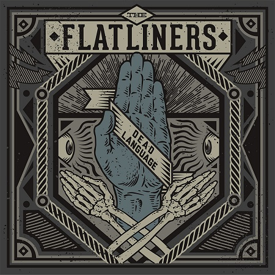

News - June 2013

On September 17th, we’ll be releasing Dead Language, the fourth studio album from our favorite Torontonians, THE FLATLINERS. Dead Language is the follow-up to the band’s acclaimed 2010 album Cavalcade. Recorded by long-time producer Steve Rizun, Dead Language is the band’s most personal and invigorating record to date. The album features 13 new tracks filled with intelligent songwriting, arena-sized choruses, big guitars and a distinct musical fluidity that comes from playing together as a band for over 10 years. Vocalist Chris Cresswell had this to say, “Dead Language is the culmination of 10 years of hard work – our first album in 3 years and our 4th overall. We were finally able to capture our sound and energy as a touring band on record, having recorded the majority of these songs live off the floor. This was easily the most fun we’ve ever had recording and I think that comes through in these songs.” Known for putting on a killer live show, THE FLATLINERS will bring their “perfect concoction of break-neck guitar rhythms, complementary solos, sing-along lyrics and danceable interludes” to a slew of cities over the next few months. Check the awesome cover art below designed by Richard Minino of Black Axe/Horsebites design.News & Updates
June 2013
New FLATLINERS album out September 17th!
05Jun, 2013
Masked Intruder Fleece America
03Jun, 2013
Propagandhi – 20 Years Clean!
29May, 2013
OMM Tour video + Summer Tour Dates!
28May, 2013
RISE AGAINST RPM 10 out today!
Featured Band
The Flatliners

Punk rock used to be about haggard road warriors. Before all the breakdowns and flat irons, there were busted transmissions and collect calls home. The Flatliners grew up believing in the later and rejecting the former, and after seven years playing together, they’re unleashing Cavalcade, their third full-length record and an epic sonic testament to the life they’ve chosen.